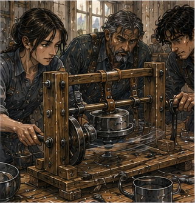

The next morning, Sevren went north. I went to Pell. This was not because Sevren went north. Probably. The regulator was still wrapped in cloth beside my bed. Six washers. Notes. Cold test. Orientation test. Vibration test still owed. Pell had asked for mechanical vibration specifically. Not mana. Good. I ate before leaving. No dramatic accounting. Also good. The workshop door was open.
Vessa was carrying a tray of ceramic bodies from the kiln room. She saw me.
“No.”
“I brought the regulator.”
“No.”
“Pell asked.”
“Still no.”
I stopped outside.
“Why?”
“Glaze firing.”
That meant something. Not my something.
“How long?”
She shifted the tray against her hip.
“Until it is not glaze firing.”
Reasonable.
“Can I wait?”
“Yes.”
Progress. I sat on an overturned crate outside. The lane smelled like wet clay and cabbage. Across the way, a cooper rolled two hoops down the street with a stick. One escaped. A child caught it. No Barrier. Everyone survived.
Pell appeared ten minutes later carrying three narrow metal rods and a cup. He saw me.
“Good.”
Vessa, from inside:
“No.”
Pell looked toward her.
“Why no?”
“Glaze.”
“Right.”
He handed me the cup. Water. Not coffee. Probably safer.
“What are you doing?” I asked.
“Waiting.”
Good workshop. We waited. This felt inefficient. Then I noticed everyone else was moving. Vessa checked kiln vents. A boy I had not seen before ground pigment at the back bench. Pell measured one rod against another, rejected one, marked it, and put it aside. A customer came for two lamp housings. Vessa handled it. Pell did not stop measuring.

The workshop was not waiting. I was. Different. I drank water. The boy grinding pigment glanced at me twice.
“What?”
I asked. He looked down.
“Nothing.”
“Good.”
Pell said, “He knows who you are.” I looked at him.
“Why?”
The boy said, “Barrier.” Of course.
“What is your name?”
“Len.”
“Do you work here?”
“Today.”
Pell said, “His uncle owes me.” Len said, “You owe him.”
“Same system.”
Not my business. Progress again. After maybe twenty minutes, Vessa came out.
“Now.”
We went in. The regulator went on the side bench. Pell had built something. Of course. A wooden frame. Two uprights. Crossbar. Leather straps. Small crank at one side connected to an off-center wheel. When turned, the bench plate shook. Not violently. Fast. Mechanical vibration. Simple. Ugly. Excellent.
“You made this?”
“Vessa.”
I looked at her. She shrugged.
“Pell made the bad one.”
Pell pointed.
“First one walked.”
“Across the floor?”
“Off the bench.”
Good.
“So this is second.”
“Third.”
Better.
“What do you want to know?” I asked.
Pell looked at my notes.
“Same flow. Same regulator. Different vibration.”
“How measured?”
“By crank speed.”
“That is not measured.”
Vessa said, “Here we go.” Pell ignored her.
“Marked wheel.”
He showed me. Four ink marks. Slow. Medium. Fast. Very fast. Not exact frequency. Enough categories.
“Who turns?”
“You.”
“Why?”
“Because your hand was not part of the fixture last time.”
Fair.
“What do you want recorded?”
“Flow stability. Flutter. Any change in output. Any visible shift.”
“And sound?”
Pell looked at me.
“Fine.”
Vessa said, “No mana.”
“Yes.”
She pointed at me.
“No Barrier holding anything still.”
“I know.”
“Good.”
That rule existed because of me now. Not proud. We mounted the regulator. Cold water feed. Catch bowl. Same washer as previous baseline. Pell checked collar. Vessa checked body support. Two supports now. Opposite sides. Ceramic body no longer depended on hand pressure. Good. We ran no vibration first. Flow clean. Low pulse. No leak. Then slow. Small flutter. Then medium. More.
Fast. Output changed. Not much. Enough. Very fast. The whole fixture hummed. Pell stopped me.
“Again.”
“Which?”
“Fast.”
We repeated. Same. Then medium. Same. Then no vibration. Clean again. Good. Reversible. I wrote. Pell changed washer. Smaller opening. No vibration. Stable. Slow. Stable. Medium. Flutter. Fast. Worse than first washer. Interesting.
“Pressure sensitivity?” I asked.
“Maybe.”
“Or seat movement.”
“Maybe.”
“Or frame resonance.”
“Maybe.”
Pell smiled. He liked maybe when it was real. Vessa did not.
“Can we find out?” I asked.
“Yes.”
“How?”
Pell took the regulator apart. Not answer. Method. He swapped one spacer. Reassembled. Run again. Different. Flutter started later.
“Spacer stiffness,” I said.
“Maybe.”
“Seat compression?”
“Maybe.”
Vessa said, “I hate both of you.” We kept going. Third configuration. Then fourth. Pell changed one thing each time. Not always what I would have changed. Good. He knew his object. I knew support behavior. Different. The second spacer was softer. Worse. We returned to first. Better again.
Then Pell rotated the whole regulator body ninety degrees without changing the washer. I almost objected because that was two lines of inquiry crossing. Then remembered orientation was already characterized. This was not a clean first experiment. It was a shop.
“Why rotate now?” I asked.
“Because customer mounts sideways.”
There. Actual use.
“Which customer?”
“No.”
“Fair.”
Sideways plus medium vibration produced less flutter than upright plus medium. Unexpected. I checked note twice.
“Again.”
Pell grinned. Now I was asking. Again. Same. Vessa leaned close.
“Fixture?”
“Could be.”
Pell touched one support.
“No hand.”
“I know.”
“We should isolate support pressure.”
I said it too quickly. Pell nodded toward a pile of work.
“Tomorrow has already been invented.”
Right. By midday we had something. Not a solution. A shape. The regulator tolerated low vibration well. At higher vibration, instability arrived sooner with the smaller washer. A stiffer spacer delayed onset but did not eliminate it. Body support helped consistency between runs. Orientation still interacted with vibration rather than disappearing beneath it.
Sideways mounting might be more stable in one tested configuration, but one fixture was not a law. No mana. No magic. No brilliant breakthrough. Useful. Pell ate standing. Bread. Cheese. Vessa had an apple. I had brought meat and bread. Len ate outside. We ate around the bench.
“What does this change?” I asked.
Pell chewed.
“For current piece?”
“Yes.”
“Mounting guidance.”
“That is all?”
He looked at me.
“That is useful.”
Right.
“What guidance?”
“Do not mount on vibrating frame.”
I waited. He smiled.
“More specific later.”
Vessa said, “Put that on the card.” Pell said, “Not yet.”
“Why?”
“Need repeat with hot line.”
I looked at Vessa. She looked at me.
“No.”
“I did not say anything.”
“You were going to.”
“Yes.”
Pell laughed. Hot line meant real operating heat. Different materials. Expansion. Seals. Risk. Not today. Good. I looked at the second body support on the ceramic fixture across the room.
“Cracks?”
Pell followed my eyes.
“Fewer.”
“How many?”
“Two in twelve.”
“Before?”
“Three in seven.”
Not enough data. Promising.
“Same firing?”
“No.”
“Same clay?”
“Yes.”
“Same worker?”
Vessa looked up.
“Why?”
“Trying to isolate.”
“No.”
“What?”
“You are trying to turn my week into your experiment.”
There. I stopped. She pointed the apple at me.
“We changed support because it was obviously wrong.”
“Yes.”
“We also changed cooling rack.”
I had not known.
“And one glaze batch.”
Also no.
“And Pell stopped stacking them like an idiot.”
Pell said, “That was one time.”
“Four.”
“So crack reduction is confounded.”
Vessa blinked.
“Yes.”
“Then we cannot attribute.”
“No.”
Pell said, “We can still sell the ones that did not crack.” There. Actual objective. Not proving mechanism. Making good pieces. I had almost made their workshop answer my question instead of their customers. Again.
“I understand.”
Vessa took another bite.
“Do you?”
“Temporarily.”
“Good enough.”
Pell finished bread.
“What about regulator?”
I looked at notes.
“Current evidence supports mounting guidance. Need hot-line repeat before anything stronger.”
He nodded. No correction. Good. Then a customer came in carrying a broken lantern frame. Not our problem. Pell took it. Looked.
“Tomorrow.”
Customer said, “Today.”
“Tomorrow.”
“Need tonight.”
“Then buy new.”
Customer looked at the price board. Did not.
“Tomorrow.”
Done. Pell put the broken frame in a tray. Work. I started packing the regulator. Vessa said, “Leave it.” I looked up.
“Why?”
“Hot line tomorrow.”
Pell said, “If you can come.” Requested. Existing thread. Narrow.
“I can.”
“Morning.”
“Which bell?”
“Second.”
Good. Specific. I left the regulator. This felt strange. Object stayed in another person's workshop because they had work for it. Not because I had abandoned it. Not because storage cost money. Because it belonged in tomorrow's task. Small thing. Still. I washed my hands. There was clay dust on them anyway. At the door, Pell called after me.
“Greg.”
I turned. He held up my notes.
“You wrote sound.”
“Yes.”
“What did you hear?”
“Fast vibration had a higher rattle before output changed.”
“Fixture or regulator?”
“I don't know.”
“Good.”
He handed notes back. That word again. I walked out. I had half a day. No regulator. No Sevren. No urgent note. No reason to go to Varo except curiosity. Dangerous. I went to the Guild instead. Not for a job. Mostly. Alden was in the practice yard. Not sparring. Watching. Two Bronze fighters worked with padded sticks. One was Pessa. The other I did not know.
Alden stood beside Berren. Berren's right foot was wrapped inside a loose boot. He saw me.
“Pig.”
“Fuck you.”
Pessa heard.
“Road expert.”
Excellent. She did not stop sparring. Good. Alden grinned.
“You working?”
“Worked.”
“What?”
“Regulator.”
He nodded like that meant something. Probably not. Berren looked at my empty hands.
“No sword?”
“I have sword.”
“Where?”
“Home.”
He looked offended.
“I was not planning to fight the Guild.”
“Coward.”
Alden's attention returned to the yard. The unknown Bronze overcommitted. Pessa stepped outside line and tapped ribs. Clean. Alden said, “Again.” Not to them. To himself. I watched him. His left arm moved unconsciously once. Practicing timing. No injury. Pattern.
“What are you working on?” I asked.
“Nothing.”
Lie.
“Your left hand moved.”
He looked at it.
“Fuck.”
Berren laughed.
“What?”
I asked. Alden shook his head.
“Later.”
Good. Not mine. The pair reset. This time the unknown Bronze shortened the first strike. Pessa still touched shoulder. Different opening. Alden's hand moved again. Not copying Pessa. Timing response. He had something. I wanted to ask. I did not. This was becoming irritating. Pessa finished round. Came over sweating.
“You owe me.”
“For?”
“Bridge.”
“What bridge?”
“West road. Oren finally sent crew. Brace was worse than it looked.”
I waited.
“I did nothing.”
“You told farmer.”
“Alden did.”
“I reported.”
“Yes.”
“So why owe?”
She grinned.
“You don't. Wanted to see your face.”
I disliked her. Reasonable.
“Fixed?”
“Temporary brace. Full repair next week.”
Good. Infrastructure continued. Without me. Berren shifted foot. Small wince. I noticed. Did not ask. Progress. Then he noticed me noticing.
“Still attached.”
“Good.”
“Disappointed?”
“No.”
“Liar.”
Alden said, “He would redesign it.”
“My foot?”
“Yes.”
“Better ankle.”
“Fuck both of you.”
Pessa looked at Berren.
“What happened?”
“Bit.”
“By?”
“Thing.”
“Useful.”
No one elaborated. Good. A runner came from the contract desk and called Alden's name. Alden looked over.
“Coming.”
He picked up his coat.
“What?” Berren asked.
“North practice.”
“With who?”
“Ressa.”
That name caught. Captain Ressa existed elsewhere in my head. Could be same. Could be not. No. Do not assign.
“Which Ressa?” I asked.
Alden looked at me.
“Why?”
“Common enough.”
“Dema's group.”
Different context. Good. He pulled coat on. Berren said, “You said you were done.”
“I said I was watching.”
“That is not done.”
“Not my problem.”
He left. Independent. Someone else wanted his time. Or he wanted theirs. Either way. I did not follow. Pessa went to wash. Berren stayed seated. I walked home. On the way, I passed a courier in a brown coat. Not Sevren. For half a second I expected him. Then did not. Good. At lodging, I opened notebook.
REGULATOR:
mechanical vibration affects stability smaller washer destabilizes earlier stiffer spacer delays onset support improves repeatability orientation still interacts sideways may be more stable in one configuration hot-line test tomorrow sound change may precede output change cause unknown
CERAMIC:
do not steal workshop into experiment I underlined that.
Then wrote:
ALDEN LEFT FOR NORTH PRACTICE.
Crossed it out. Not information I needed. Another improvement. Maybe. I closed notebook. Tomorrow, second bell, Pell. That was enough.